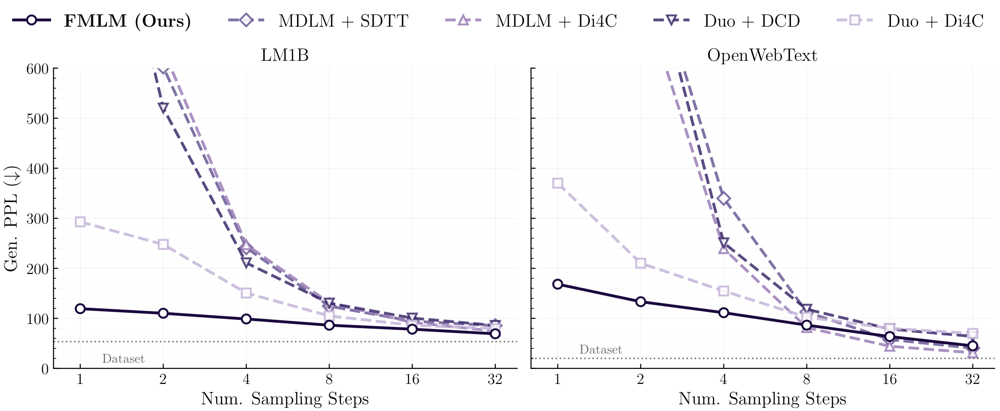
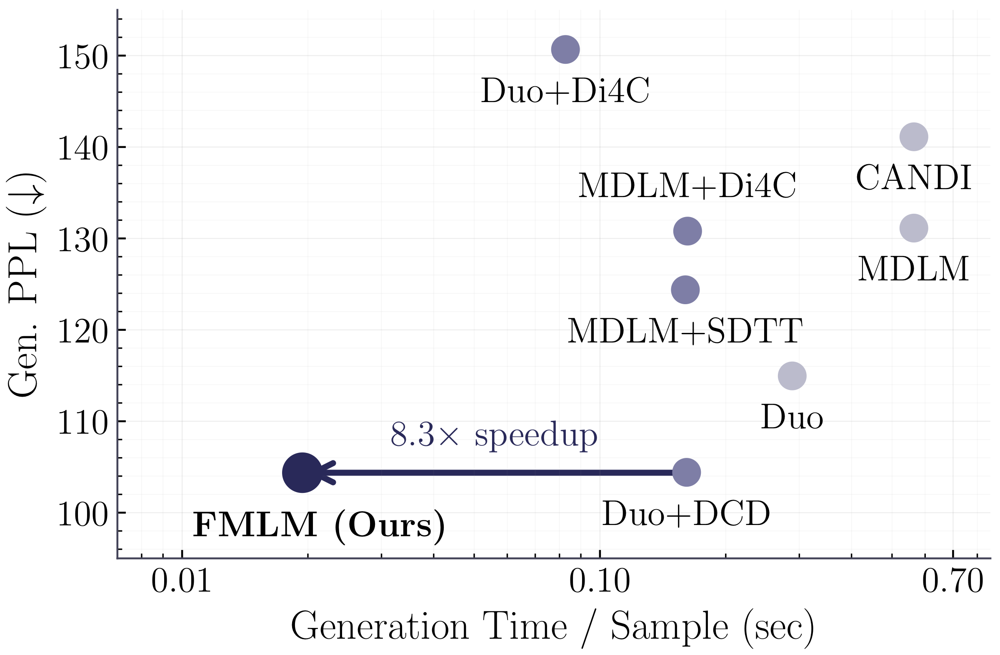
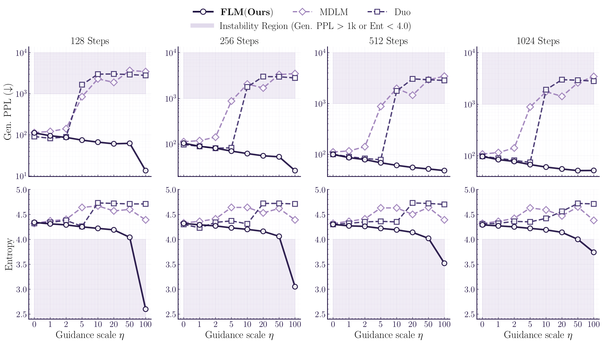
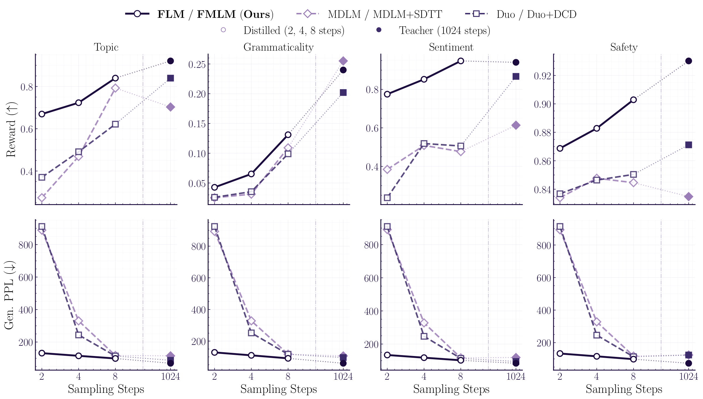

Diffusion language models promise fast parallel text generation, but they fall apart with few sampling steps. We show how continuous flows fix this, enabling coherent text generation in a single forward pass.
Autoregressive language models like GPT generate text one token at a time, each token depending on all previous ones. This is a bottleneck: generating a 128-token sentence requires 128 sequential forward passes through the model.
Diffusion models offer an appealing alternative. Instead of generating left to right, they start from noise and iteratively denoise all tokens in parallel. The idea is that with enough denoising steps, the noise gradually resolves into coherent text. But what if we could do this in just a few steps—or even one?
One-step parallel text generation. All tokens transition simultaneously from random noise to coherent text in a single forward pass.
This is the promise of our work. But getting here requires overcoming a fundamental limitation of how existing discrete diffusion models work. Let's understand why.
Discrete diffusion models corrupt text by randomly replacing tokens with other tokens, then learn to reverse this process. But here's the catch: to reverse the corruption, these models must predict the probability of reverting each token independently. This is called the factorization assumption—each token is denoised as if the others don't exist.
When you take many small steps, this independence assumption is harmless: each step makes a tiny change, and the correlations between tokens build up naturally over many steps. But when you take few steps, each step must make a large jump, and the independence assumption breaks.
Factorization error in discrete diffusion. Consider a toy dataset with two valid phrases: "New York" and "San Diego." With many steps, both discrete diffusion and continuous flows generate valid pairs. With few steps, discrete diffusion independently samples each token, producing spurious mixtures like "New Diego" and "San York." Continuous flows maintain token correlations even with one step.
This isn't a minor issue. In practice, discrete diffusion models show either generative perplexity blow-ups (generating random word salad) or entropy collapse (repeating high-frequency tokens like commas and "the") when pushed to few-step generation. This fundamentally limits their practical speedup over autoregressive models.
Our key idea is to abandon the discrete framework entirely and work in continuous space. Instead of thinking of each token as a discrete symbol to be swapped, we represent it as a point in continuous space using its one-hot encoding—a vector that is 1 in one position and 0 everywhere else.
In this continuous space, we can define a flow: a smooth transport that carries a cloud of noisy points to the data distribution. Think of it like a river current: every point in space has a velocity that tells it where to go, and following these velocities from time $t{=}0$ (noise) to $t{=}1$ (data) transforms noise into text.
Flow matching in continuous space. A cloud of noisy samples (bottom) is smoothly transported to the target distribution by following a learned velocity field. The path through probability space (top) shows the continuous transformation from noise $\rho_0$ to data $\rho_1$.
The crucial advantage? In continuous space, the flow operates on entire samples—the full sequence of tokens at once. There is no need for the factorization assumption. The velocity field naturally captures correlations between all tokens, because it processes the entire sequence as one continuous object.
But wait—text is still inherently discrete. How does a continuous flow produce actual words? The answer lies in the geometry of one-hot vectors.
Each token in a vocabulary of $|V|$ words corresponds to a vertex of the probability simplex—a geometric shape whose vertices are the one-hot vectors. During the flow, each token starts as a noisy point in this space and gradually drifts toward one of the vertices. At the end, we simply read off the nearest vertex to decode a discrete token.
Stochastic interpolant on the simplex. Noisy points (sampled from a Gaussian) are linearly interpolated toward one-hot vertices of the simplex, each representing a word. By $t{=}1$, every point has arrived at a vertex—a discrete token.
This is the elegance of the approach: we train in continuous space using standard flow matching techniques, but the one-hot geometry automatically ensures that the output is discrete. No special discretization tricks needed.
We can visualize the learned velocity field directly on the simplex. At each point, the velocity tells the flow where to push—and the arrows naturally point toward the correct vertex, guiding every noisy point home.
Velocity field on the simplex. The learned velocity field shows the direction each point is pushed at each location. Arrows converge toward the simplex vertices, transporting noisy points to discrete tokens.
A standard flow matching model predicts a velocity—a direction to move in continuous space. But for language, we discovered that predicting the velocity directly is a bad idea. The vocabulary is huge ($|V| \approx 50{,}000$), so the velocity lives in a very high-dimensional space, and standard regression losses (like mean squared error) struggle to learn it.
Instead, we reparameterize the model as a denoiser: given a noisy intermediate point $x_t$, the model predicts what the clean data $x_1$ should be. Mathematically, the optimal denoiser equals the posterior probability over tokens: $D_t(x) = p(x_1 | x_t)$. This lives on the probability simplex, so we can use a softmax output and train with cross-entropy loss—exactly like a classifier.
Denoiser as posterior. The denoiser predicts a probability distribution over tokens (shown as blobs at simplex vertices). As $t \to 1$, the distribution concentrates on the correct token.
Decision regions sharpen over time. The simplex is partitioned into classification regions. As $t$ increases, the model becomes increasingly confident about which token each noisy point belongs to.
This switch from regression to classification makes a dramatic difference. On our benchmarks, cross-entropy training improves generative perplexity from 120 to 97—a 20% improvement—simply by respecting the discrete geometry of the output space.
So far we have a flow-based language model (FLM) that generates text by following a velocity field for many steps. This already outperforms discrete diffusion, but we still need many steps. How do we get to one step?
The idea is to learn a flow map—a function that directly maps a point at any time $s$ to where it would end up at a later time $t$, without tracing the intermediate path. Think of it as a "teleporter": instead of following the river current step by step, the flow map tells you exactly where you'll end up.
Continuous flow. The density smoothly sweeps from $\rho_0$ to $\rho_1$, passing through every intermediate state.
Flow map. The flow map "teleports" the density directly between time points, skipping the intermediate states. With a single map $X_{0,1}$, we jump straight from noise to data.
We learn the flow map by distilling the pretrained flow model. The key property we exploit is the semigroup structure: a flow map from $s$ to $t$ can be decomposed as two consecutive maps $s \to u \to t$. This means we can train the flow map to be self-consistent:
$X_{s,t}(x) = X_{u,t}(X_{s,u}(x))$
By enforcing this composition rule during training, the model learns to make larger and larger jumps while maintaining accuracy. Eventually, it can jump from $s{=}0$ all the way to $t{=}1$ in a single step.
From velocity to flow map. As two consecutive flow map jumps collapse to a single point, the discrete jump direction converges to the instantaneous velocity—the tangent of the flow. The flow map generalizes the velocity field to finite time intervals.
Just as we reparameterized the velocity as a denoiser, we reparameterize the flow map as a two-time denoiser $\delta_{s,t}(x)$. This object has a beautiful property: it always lies on the probability simplex, regardless of the time interval $(s, t)$. This means we can train it with cross-entropy loss, inheriting all the benefits of the classification formulation.
Intuitively, the two-time denoiser predicts "given the noisy state at time $s$, what would the clean data prediction be if I ran the flow to time $t$?" When $s = t$, this reduces to the ordinary denoiser. When $t = 1$, it gives the final prediction directly.
Two-time denoiser $\delta_{s,t}$. The two-time denoiser maps a noisy point at time $s$ to a prediction on the simplex, parameterizing the flow map while always remaining on the probability simplex.
There are three equivalent mathematical characterizations of the flow map, each giving rise to a different distillation objective. All three are valid—they characterize the same object—but they build the teacher signal in fundamentally different ways.
Semigroup. The teacher is a convex combination of two shorter jumps: $\bar{\delta}_{s,t} = \gamma\,\hat{\delta}_{s,u}(I_s) + (1{-}\gamma)\,\hat{\delta}_{u,t}(X_{s,u}(I_s))$. Composing two shorter jumps must equal one longer jump. The distillation proceeds progressively: starting from the pretrained velocity field (which makes infinitesimal steps), the model learns to compose small jumps into larger ones—until a single jump from $t{=}0$ to $t{=}1$ produces coherent text.
Semigroup distillation. The teacher is a convex combination of two shorter jumps on the simplex. No derivatives needed—only forward evaluations.
Lagrangian. The teacher follows the "particle" forward along the flow. It is built by transporting $I_s$ forward to $X_{s,t}(I_s)$, applying the pretrained denoiser $D_t$ there, and applying a derivative correction:
$$\bar{\delta}_{s,t} = D_t(X_{s,t}(I_s)) - \tfrac{(1-t)(t-s)}{1-s}\,\partial_t \hat{\delta}_{s,t}(I_s)$$Lagrangian distillation. The teacher is constructed by transporting $I_s$ forward along the flow, applying the pretrained denoiser at the transported point, and correcting with $\partial_t \hat{\delta}$. This corresponds to methods like terminal velocity matching.
Eulerian. The teacher stays at the starting point and uses derivative information. It is built from the pretrained denoiser at $I_s$—no transport needed—corrected by the Jacobian of the student:
$$\bar{\delta}_{s,t} = D_s(I_s) + \tfrac{t-s}{1-t}\Big((1{-}s)\,\partial_s \hat{\delta}_{s,t}(I_s) + (D_s(I_s) - I_s) \cdot \nabla \hat{\delta}_{s,t}(I_s)\Big)$$Eulerian distillation. The teacher uses the pretrained denoiser at the starting point—no transport needed—corrected by the Jacobian of the student. This corresponds to methods like consistency models and MeanFlow.
All three objectives also have self-distillation variants (Prop. C.11 in the paper), where the model trains from scratch without a pretrained teacher: the diagonal term becomes standard flow matching (cross-entropy to one-hot data), and the off-diagonal teacher uses the model's own predictions. This connects the Eulerian self-distillation to consistency models and MeanFlow, and the Lagrangian self-distillation to terminal velocity matching.
The full pipeline works in two stages:
Stage 1: Train FLM. We train a flow-based language model using the denoiser parameterization with cross-entropy loss. A key ingredient is a time reparameterization based on the decoding error rate—the probability that the current noisy state decodes to the wrong token. This redistributes training effort so that each step contributes equally to denoising, which is critical when the vocabulary is large.
The decoding error rate $P_e(t)$ measures what fraction of tokens are incorrectly decoded at time $t$. For the linear interpolant, $P_e$ stays high for most of the interval and drops sharply only near $t{=}1$—meaning most of the "action" is concentrated in a tiny time window. Uniform time sampling wastes most of the training budget on times where nothing interesting happens.
The reparameterization $\tau(t) = 1 - \frac{|V|}{|V|-1} P_e(t)$ rescales time so that each unit of $\tau$ corresponds to equal progress in resolving tokens. Compare the two animations below: with uniform time, points (colored red when incorrectly decoded, blue when correct) stay red for most of the animation and snap to blue only at the very end. With reparameterized time, the transition is spread evenly, giving the model uniform signal throughout training.
Uniform time. Points stay incorrectly decoded (red) for most of the interval and snap to correct (blue) only near $t{=}1$.
Reparameterized time. In $\tau$-space, each particle turns blue at a regular interval, reflecting uniform denoising progress.
Density evolution during generation. The distribution evolves from a noisy 2-mode mixture at $t{=}0$ to the clean 3-mode target at $t{=}1$, illustrating how the flow gradually reshapes the distribution.
Stage 2: Distill into FMLM. We distill FLM into a flow map language model using the two-time denoiser parameterization and the semigroup consistency loss. The distilled model can generate text in 1, 2, 4, or 8 steps.
We evaluate on two standard benchmarks: LM1B (One Billion Word) and OpenWebText (OWT), measuring generative perplexity (lower is better) and entropy (should match the dataset's entropy).
At 1024 steps, FLM already outperforms all discrete diffusion baselines, achieving 96.91 generative perplexity on LM1B (vs. 98.14 for the best baseline, Duo) and 62.23 on OWT (vs. 77.69). This shows that continuous flows are not just useful for speedup—they produce better samples even in the many-step regime.
The real story is in the few-step regime, where FMLM dramatically outperforms distilled discrete diffusion:

Qualitatively, the difference is even more striking. At one step, discrete diffusion baselines produce either garbled text (generative perplexity >1200) or degenerate text (entropy collapse to 3.79). FMLM generates coherent, grammatically reasonable sentences while maintaining entropy close to the dataset.

The ablation studies reveal that every piece matters:

Beyond unconditional generation, continuous flows also enable reward-guided generation. By plugging in classifiers for attributes like topic, grammaticality, sentiment, and safety, FLM and FMLM can steer generation toward desired properties—even at very few steps.

This work challenges a widely held assumption: that discrete noising processes are necessary for generative modeling over discrete data like text. By showing that continuous flows can outperform discrete diffusion in both quality and speed, we open the door to leveraging the rich toolkit of continuous generative modeling—including guidance, inversion, and editing—for language generation.
We believe the most exciting direction is scaling: our 170M-parameter model already achieves strong results, and the approach is fully compatible with modern transformer architectures. As these models grow, one-step language generation could become a practical alternative to autoregressive decoding.
For the full technical details, see our paper: One-step Language Modeling via Continuous Denoising. Code is available on GitHub.